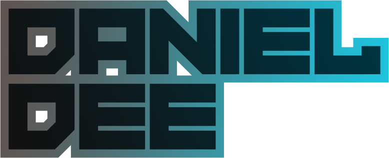
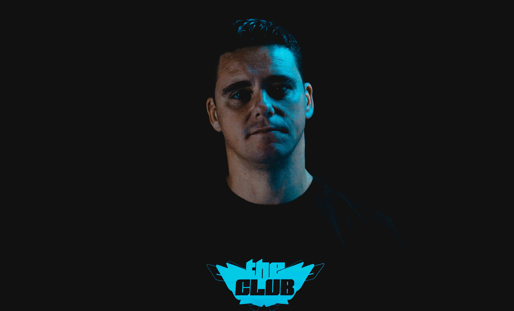
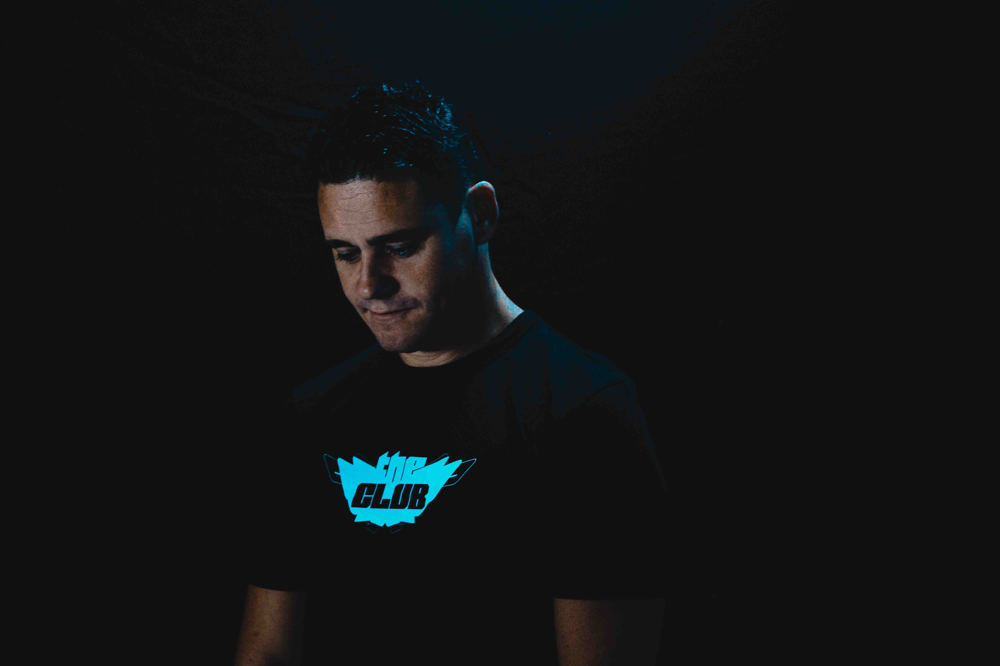
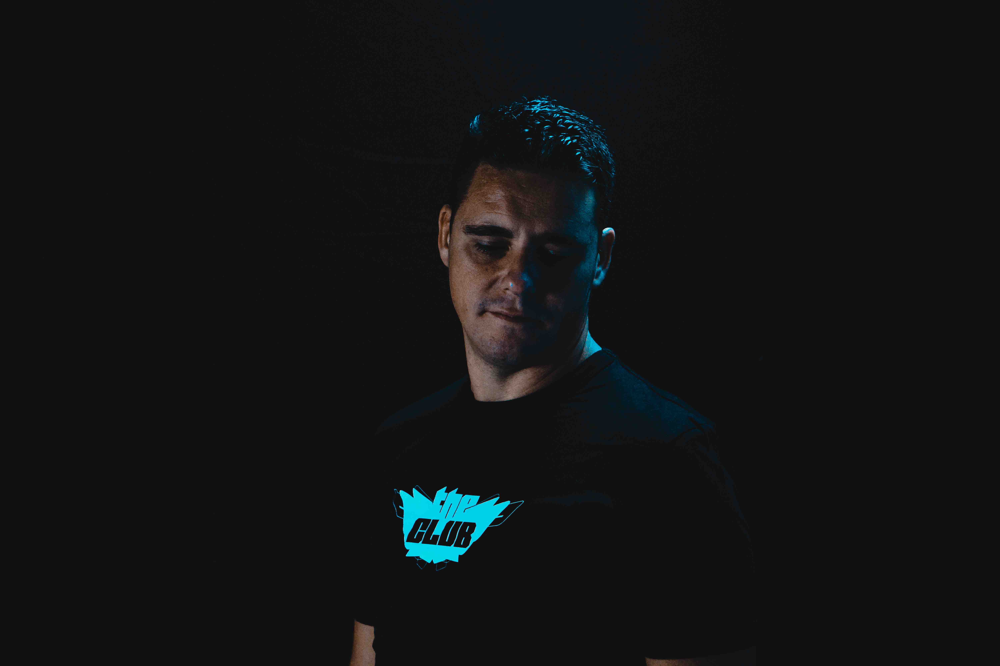
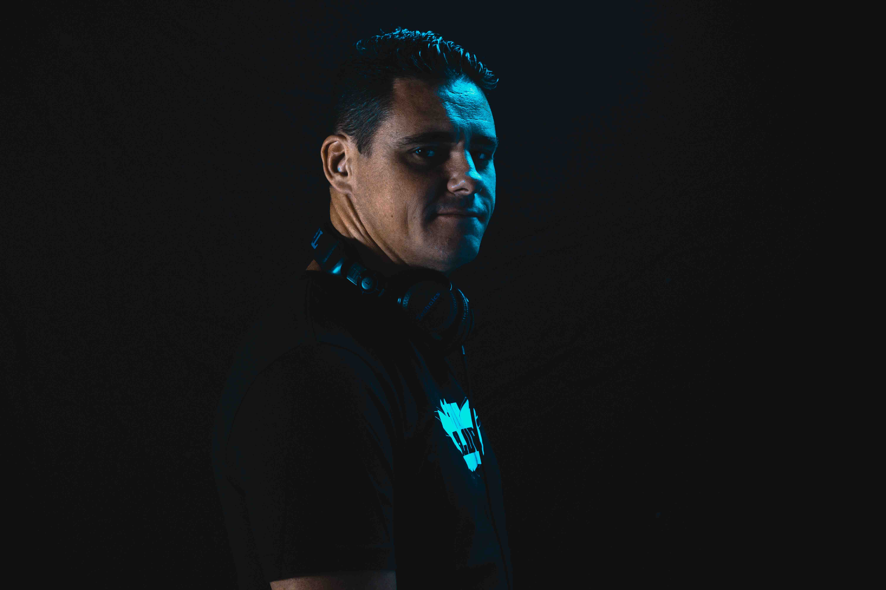
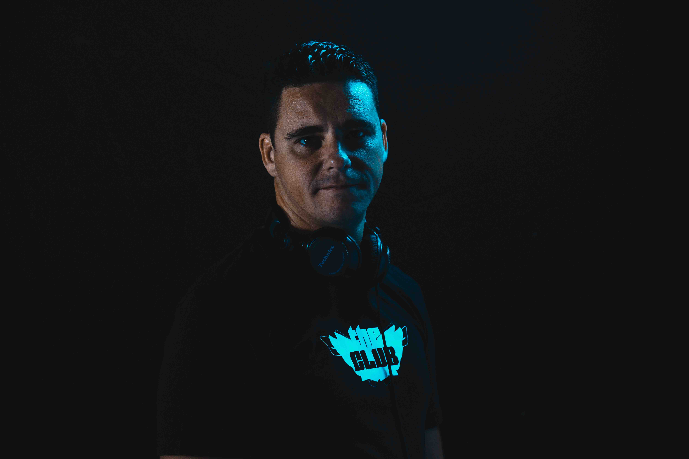
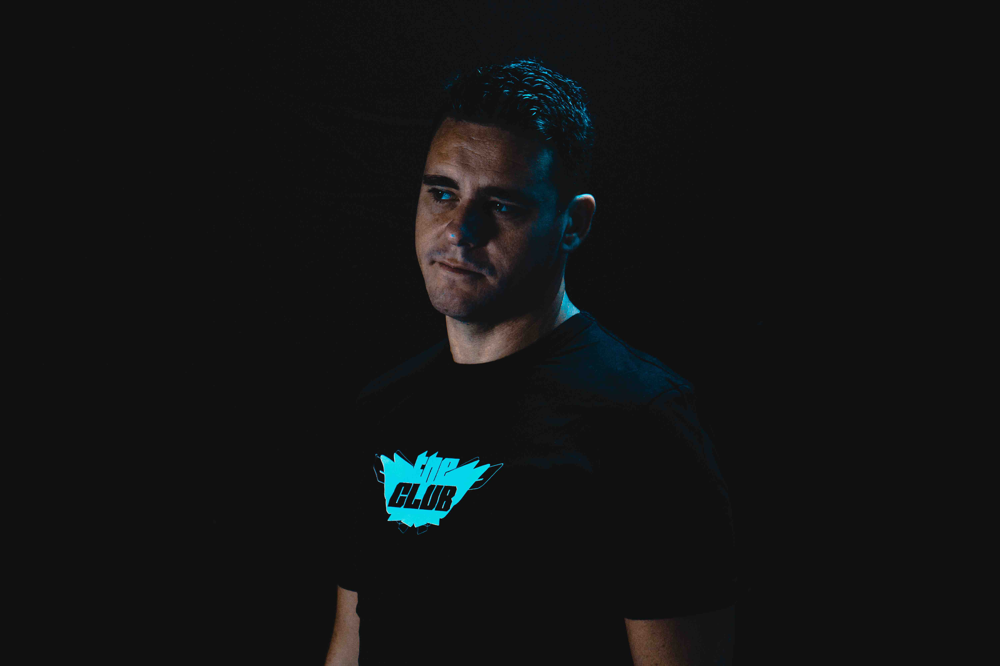

<!DOCTYPE html>
<html lang="en" dir="ltr">
  <head>
    <meta charset="utf-8">
    <meta http-equiv="X-UA-Compatible" content="IE=edge">
    <meta name="viewport" content="width=device-width, initial-scale=1">
    <link rel="stylesheet" href="https://cdnjs.cloudflare.com/ajax/libs/font-awesome/5.13.1/css/all.min.css">
    <link rel="stylesheet" href="https://unpkg.com/swiper/swiper-bundle.css"/>
    <link rel="stylesheet" href="../../public/css/uikit.css"/>
    <link rel="stylesheet" href="../../public/css/app.css">
    <link rel="icon" type="image/png" href="../../public/img/logominuscolo.png"/>
    <title>Daniel Dee</title>
    <script src="https://unpkg.com/swiper/swiper-bundle.js"></script>
    <script src="../../public/js/uikit-icons.js"></script>
    <script src="../../public/js/uikit.js"></script>
  </head>
  <script src="https://code.jquery.com/jquery-3.5.1.js" integrity="sha256-QWo7LDvxbWT2tbbQ97B53yJnYU3WhH/C8ycbRAkjPDc=" crossorigin="anonymous"></script>
  <script src="../../public/js/app.js"></script>
</html>
<!-- end head  -->
<!-- starting header  -->
<header>
    <!-- first header section  -->
    <section class="header_top">
      <!-- nav header wrapper  -->
      <nav class="header_wrapper">
        <!-- left info  -->
        <div class="left_info">
            <!-- logo  -->
            <a href="#hero_section">
              
            </a>
        </div>
        <div class="right_info">
          <i class="fas fa-bars hamburgher">
            <ul class="dropdown_list_item">
              <a class="list_item mix" href="#landing_channel">Channel</a>
              <a class="list_item music" href="#landing_music">Music</a>
              <a class="list_item" uk-toggle="target: #pictures_modal">Photo</a>
              <a class="list_item" uk-toggle="target: #contacts_modal">Contacts</a>
              <a class="list_item" uk-toggle="target: #bio_modal">Bio</a>
            </ul>
          </i>
        </div>
      </nav>
      <!-- modal contact bg  -->
      <div id="contacts_modal" class="modal_bg">
        <div class="modal_contacts_content">
            <li><a href="mailto:info@danield.net" target="_blank"><i class="far fa-envelope"></i></a></li>
            <li><a href="https://www.facebook.com/DanielDee06?locale=it_IT%2F" target="_blank"><i class="fab fa-facebook-square"></a></i></li>
            <li><a href="https://www.instagram.com/danieldeedj/?fbclid=IwAR0mETN4RKMcM0G1r8nJ5qTLtN7C22p7lJ5gL6OhG8CFboIU3IPgaqztUyI" target="_blank"><i class="fab fa-instagram"></a></i></li>
            <li><a href="https://twitter.com/DanielDee06" target="_blank"><i class="fab fa-twitter" ></a></i></li>
            <a class="uk-modal-close close_modal">X</a>
        </div>
      </div>
      <!-- modal bio bg  -->
      <div id="bio_modal" class="modal_bg">
        <div class="modal_bio_content">
            <h3>Music</h3>
            <p>Progressive/Techno/Electronic Music</p>
            <h3>Nationality</h3>
            <p>Italian</p>
            <h3>Biography</h3>
            <p>
              Daniel Dee was born in 1982 in rome, Italy. he started his career as a dj at the age of 15 working at a 
              famous club in rome: NRG(of Ciampino). at that time, the roman best club scene was dominated by the 
              trance-progressive club genre which influenced him greatly. after his first year of performing, he was 
              chosen as the resident dj of the NRG club becoming one of the most important figures of the best sunday 
              evening in Italy. In 1998 he was played regularly on “future zone” on mondo radio which was considered at 
              the time the best progressive house radio show of the centre region of italy. it was on air every sunday 
              morning from 12am to 01 pm. as time went by widening his musical knowledge he played techno/progressive and 
              started to work in music studios creating new original tracks which at the moment has been released on various records 
              among these is the hystorical Bonzai Records. At the same time he continued to gain 
              experience in studios and playing in clubs, working with other top dj's of Italy. most recently, Daniel Dee 
              has put together an original and innovative projects like: "The Club" and "Khoema", which are currently being proposed to the 
              roman club scene.
            </p>
            <a class="uk-modal-close close_modal absolute_close_modal">X</a>
            <a class="download" href="../../public/img/Daniel_dee_presskit.zip" download>Download the artist press kit</a>
        </div>
      </div>
    </section>
    <!-- end first header section  -->
    <!-- second header section  -->
    <section>
      <!-- hero  -->
        <div id="hero_section" class="hero">
          
          
        </div>
    </section>
    <!-- end second section  -->
  </header>
  <!-- end header  -->
<!-- first main section  -->
<section class="first_main_section">
    <!-- modal pictures bg  -->
    <div id="pictures_modal" class="modal_bg">
        <div class="modal_pictures_content">
          <!-- Slider main container -->
            <div class="swiper-container pictures_swiper_container">
              <!-- Additional required wrapper -->
              <div class="swiper-wrapper">
                <!-- Slides -->
                <div class="swiper-slide">
                  
                </div>
                <div class="swiper-slide">
                  
                </div>
                <div class="swiper-slide">
                  
                </div>
                <div class="swiper-slide">
                  
                </div>
                <div class="swiper-slide">
                  
                </div>
                <div class="swiper-slide">
                  
                </div>
              </div>
              <!-- If we need pagination -->
              <div class="swiper-pagination"></div> 
            </div>
            <a class="uk-modal-close close_modal absolute_close_modal white">X</a>
        </div>
      </div>
    <!-- landing voice  -->
    <h1 id="landing_channel">Channel</h1>
    <!-- main wrapper  -->
    <div class="main_wrapper">
        <!-- music item  -->
        <div class="mix_item">
            <!-- music item info  -->
            <div class="mix_item_info"></div>
            <!-- overlay mix  -->
            <div class="overlay_mix">
                <a href="https://www.mixcloud.com/daniel-dee/" target="_blank"></a>
            </div>
        </div>
        <!-- music item  -->
        <div class="mix_item">
             <!-- music item info  -->
            <div class="mix_item_info"></div>
            <!-- overlay mix  -->
            <div class="overlay_mix">
                <a href="https://open.spotify.com/artist/73rTSTOwixQnWG9UkOj6QE?si=YZT1_ZDzRKCAZUI9nnQYgg" target="_blank"></a>
            </div>
        </div>
        <!-- music item  -->
        <div class="mix_item">
            <!-- music item info  -->
            <div class="mix_item_info"></div>
            <!-- overlay mix  -->
            <div class="overlay_mix">
                <a href="https://soundcloud.com/info48" target="_blank"></a>
            </div>
        </div>
        <!-- music item  -->
        <div class="mix_item">
            <!-- music item innfo  -->
            <div class="mix_item_info"></div>
            <!-- overlay mix  -->
            <div class="overlay_mix">
                <a href="https://www.youtube.com/channel/UCmltOkvTXEp6SaDOVnkvbUg/featured" target="_blank"></a>
            </div>
        </div>
    </div>
</section>
<!-- second main section  -->
<section class="second_main_section">
    <!-- landing voice  -->
    <h1 id="landing_music">Music</h1>
    <!-- main wrapper  -->
    <div class="main_wrapper">
        <!-- music item  -->
        <div class="music_item">
            <iframe src="https://embed.beatport.com/?id=12822906&type=track" width="400" height="162" frameborder="0" scrolling="no" style="max-width:600px;"></iframe>
        </div>
        <!-- music item  -->
        <div class="music_item">
            <iframe src="https://embed.beatport.com/?id=12822907&type=track" width="400" height="162" frameborder="0" scrolling="no" style="max-width:600px;"></iframe>
        </div>
        <!-- music item  -->
        <div class="music_item">
            <iframe src="https://embed.beatport.com/?id=12822908&type=track" width="400" height="162" frameborder="0" scrolling="no" style="max-width:600px;"></iframe>
        </div>
        <!-- music item  -->
        <div class="music_item">
            <iframe src="https://embed.beatport.com/?id=12822909&type=track" width="400" height="162" frameborder="0" scrolling="no" style="max-width:600px;"></iframe>
        </div>
        <!-- music item  -->
        <div class="music_item">
            <iframe src="https://embed.beatport.com/?id=12823058&type=track" width="400" height="162" frameborder="0" scrolling="no" style="max-width:600px;"></iframe>
        </div>
        <!-- music item  -->
        <div class="music_item">
            <iframe src="https://embed.beatport.com/?id=12823057&type=track" width="400" height="162" frameborder="0" scrolling="no" style="max-width:600px;"></iframe>
        </div>
        <!-- music item  -->
        <div class="music_item">
            <iframe src="https://embed.beatport.com/?id=12823056&type=track" width="400" height="162" frameborder="0" scrolling="no" style="max-width:600px;"></iframe>
        </div>
        
        <div class="music_item">
            <iframe src="https://embed.beatport.com/?id=12823059&type=track" width="400" height="162" frameborder="0" scrolling="no" style="max-width:600px;"></iframe>
        </div>
    </div>
</section>
<!-- footer  -->
<footer>
  <!-- footer  -->
    <section class="footer">
      <!-- footer wrapper  -->
      <div class="footer_wrapper">
        <!-- left footer  -->
        <div class="left_footer">
            <small>©All rigths reserved</small>
            <p>Made By DC</p>
        </div>
      </div>
    </section>
</footer>